מודל LEF ← ארגז הכלים ← מושגי יסוד ← קו הקורוטציה
מה זה?
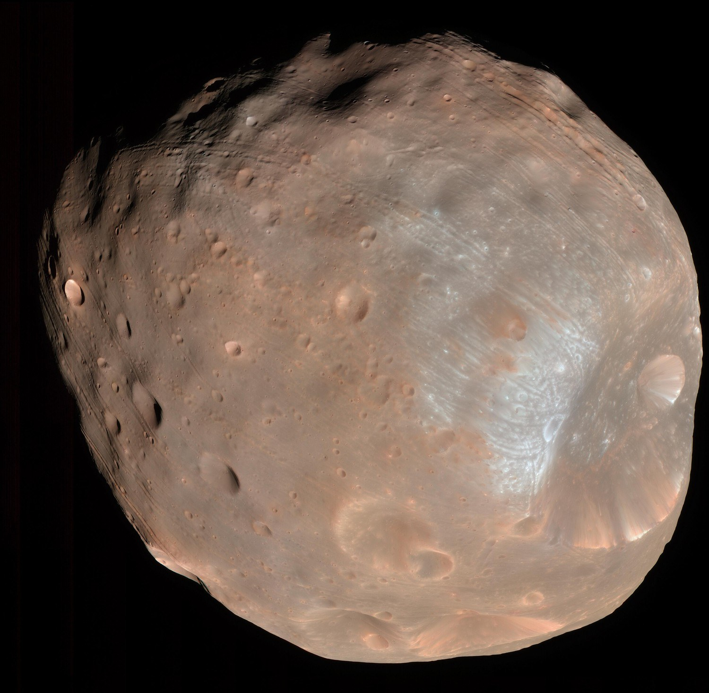
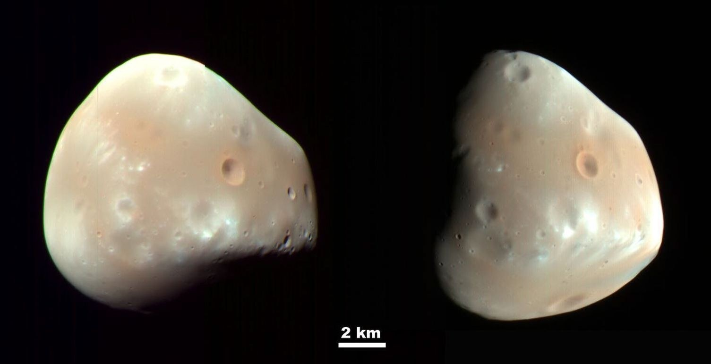
שני הירחים של מאדים, פובוס ודיימוס, נראים כמו אחים, אך גורלם הפוך לחלוטין. פובוס, הירח הפנימי, יורד לאטו אל מאדים ועתיד להתפרק בעוד כמה עשרות מיליוני שנים; ואילו דיימוס, הירח החיצוני, מתרחק ממנו בהדרגה. ביניהם עובר קו בלתי נראה, וכל אחד מן השניים שוכן בצד אחר שלו.
הגדרה: קו הקורוטציה (או רדיוס הקורוטציה) הוא המרחק ממרכז כוכב הלכת שבו גוף המסתובב יחד עם הכוכב נע בדיוק במהירות הנדרשת למסלול מעגלי חופשי. במרחק זה, זמן ההקפה של הגוף שווה בדיוק לאורך היממה של הכוכב.
מיקומו של הקו תלוי אך ורק בשני גורמים: מסת הכוכב ואורך היממה שלו. יממה קצרה (סיבוב מהיר) מקרבת את הקו אל פני הכוכב, ואילו יממה ארוכה (סיבוב איטי) מרחיקה אותו החוצה.
- מה שלנו ומה לא: קו הקורוטציה אינו המצאה של מודל LEF. זוהי פיזיקה קלאסית וידועה המופיעה בספרי הלימוד ופועלת מעל ראשינו בכל יום: הלוויינים הגיאוסטציונריים שלנו ממוקמים בדיוק על קו הקורוטציה של כדור הארץ כיום. גם המודלים המקובלים להיווצרות הירח נשענים על אותו מושג. החידוש של מודל LEF נעוץ באופן השימוש בקו: גוף המחובר לכדור הארץ מורם בהדרגה אל הקו, ושם הוא משתחרר אל המסלול — ללא זריקה וללא מכת פגיעה.
דימוי מוחשי: קו מפריד שזז
קו הקורוטציה מתפקד כקו מפריד חד וברור. מתחת לקו, כבידת כוכב הלכת חזקה יותר מן הדחיפה הצנטריפוגלית של הסיבוב, ולכן כל חומר המשתחרר שם נופל פנימה. מעל הקו, כוח הסיבוב גובר על הכבידה, וכל גוף המשתחרר שם נמשך ומתרחק החוצה.
אולם קו הקורוטציה אינו גבול קבוע המצויר על מפה — הוא קו דינמי הנע בהתאם לנסיבות הפיזיקליות של הכוכב:
- כאשר ליבת הכוכב מתארגנת וחומר כבד שוקע אל המרכז, הכוכב מאיץ את סיבובו — בדומה לרקדנית המקרבת את ידיה אל גופה — וקו הקורוטציה מתקרב אל פני השטח.
- כאשר הכוכב מאט את סיבובו — למשל כשהוא מעביר תנע זוויתי אל הגוף שהוא מרים כלפי מעלה — הקו מתרחק החוצה.
יתרה מזאת, קו הקורוטציה אינו רק גבול פסיבי: הוא שחקן פעיל בתהליך הבנייה, וברגע שחומר מגיע אליו, כללי המשחק הפיזיקליים משתנים.
איך הגענו אל הקו? (התפתחות הרעיון במודל)
- יולי 2026 — קטיעה: בגרסתו הראשונה של המודל, הירח נפרד מכדור הארץ בצוואר צר במרחק של כ-20,000 ק"מ, ביממה מהירה מאוד. בשלב זה קו הקורוטציה טרם הופיע במודל.
- אוגוסט 2026 — גילוי הקו: השאלה המנחה הייתה: אם תנאי הפתיחה של כוכבי לכת צעירים כלליים כל כך, מדוע לא לכל כוכב לכת יש ירח? החיפוש אחר התשובה הוביל אל קו הקורוטציה. על הקו, מהירות הסיבוב משתווה למהירות המסלולית, ולכן אין כל צורך לזרוק את החומר לחלל — די להרים אותו לשם בעודו מחובר לכוכב. מכאן נולד שמו של המודל: הרמה (Elevation).
- אוקטובר 2026 — הרגע המדויק: הירח מתחיל להיפרד כאשר מרכז המסה שלו מגיע אל הקו, ומשתחרר כ-210 ק"מ מעבר לו. התארגנות הליבה קובעת את אורך היממה ברגע השחרור: 5.77 שעות.
- נובמבר 2026 — השחקן הפעיל: הקו קובע את גודלו של האגס, שכן חומר המגיע אליו מאבד את הנדיפים שלו; וברגע שהירח מגיע אל הקו, הקו משחרר אותו והאגס מאבד את המסה שמשכה אותו כלפי חוץ.
(בערך זה, כמו באנציקלופדיה כולה, ההחלטות האחרונות באבולוציה של המודל הן הקובעות).
מדע מול מודל: קו ידוע, שימוש חדש
1. מה ידוע ונמדד בתצפיות
- המסלול הגיאוסטציונרי: ממוקם במרחק 42,164 ק"מ ממרכז כדור הארץ (עבור יממה כוכבית של 23 שעות ו-56 דקות). לוויין הנמצא במסלול זה נראה תלוי ללא תנועה מעל נקודה קבועה על פני כדור הארץ.
- פרשת המים הגאותית: ירח המקיף מתחת לקו הקורוטציה נע מהר יותר מסיבוב כוכב הלכת; כוחות הגאות בולמים אותו והוא מתקרב בהדרגה אל הכוכב. לעומתו, ירח המקיף מעל הקו נע לאט יותר מסיבוב הכוכב; הגאות דוחפת אותו קדימה והוא מתרחק. פובוס ודיימוס סביב מאדים הם ההדגמה החיה של חוק זה.
- הירח שלנו: שוכן הרחק מעבר לקו הקורוטציה של ימינו, ולכן מתרחק מכדור הארץ בקצב של כ-3.8 ס"מ בשנה, ובמקביל היממה הארצית מתארכת בהדרגה.
- פלוטו וכארון: הגיעו אל תחנת הסיום של האבולוציה הגאותית — מצב סינכרוני כפול, שבו אורך היממה של שני הגופים שווה לזמן ההקפה שלהם זה סביב זה. קו הקורוטציה והמסלול התלכדו.
- טבעות שבתאי: ה"חישורים" (spokes) — אותם כתמים כהים ורדיאליים הנראים בטבעת B — מופיעים בין 102,000 ל-112,000 ק"מ, ומגיעים עד קו הקורוטציה של שבתאי (כ-111,600 ק"מ).
2. מה אומרת הספרות המקובלת
- הסינסטיה (Lock & Stewart, 2017): המודל המוביל כיום במסגרת תאוריית הפגיעה הענקית מתאר את כדור הארץ שלאחר ההתנגשות באמצעות "גבול הקורוטציה" — מעטפת אדים מסתובבת ומהירה כל כך, עד שחלקה החיצוני אינו מסוגל עוד להסתובב יחד עם פנים הגוף. הקו נחצה שם בבת אחת, באירוע התנגשות אלים.
- טבעת עבר למאדים (Ćuk ועמיתיו, 2020): נטיית מסלולו של דיימוס מעידה על ירח פנימי קדום שנדד כלפי חוץ בניגוד לכיוון הגאות שמתחת לקו — תהליך המחייב קיומה של טבעת מסיבית בעבר. ממצא זה תומך במחזוריות של טבעת וירחים סביב מאדים.
- אסטרואידים כפולים: כאשר אסטרואיד מאיץ את סיבובו ומתפצל, התנהגותו המסלולית של הגוף המשני מוכתבת על ידי השאלה האם נוצר מתחת לקו הקורוטציה או מעליו.
- ההתנגדות לביקוע הקלאסי: כדי שכדור הארץ יתבקע כתוצאה מסיבוב עצמי מפני השטח, נדרשה לו יממה של כ-2.7 שעות ותנע זוויתי הגדול פי כמה מן התנע הזוויתי האצור כיום במערכת כדור הארץ–ירח. בשל פער זה ננטשה השערת הביקוע של דרווין.
3. מה אומר מודל LEF
- הרמה, לא זריקה: גוף המחובר לכדור הארץ ומסתובב עמו מורם בהדרגה אל קו הקורוטציה. ברגע הגעתו אל הקו, הוא כבר נע במהירות מסלולית מלאה, ואין כל צורך להעניק לו דחיפה נוספת.
- יממה סבירה ותקציב סגור: הקו מאפשר לירח להיפרד ביממה של 5.5–5.77 שעות, ותקציב התנע הזוויתי נסגר על פי 1.007 בלבד מזה של היום (במקום פי 2.7 עד 4 בביקוע הקלאסי).
- רצף מתמשך, לא אירוע רגעי: הקו אינו נחצה בבת אחת. האגס מטפס לעברו במשך מאות מיליוני שנים, בעוד הקו עצמו נע ומשנה את מיקומו תוך כדי התהליך.
- שחקן פעיל: הקו אינו גבול גיאומטרי בלבד — הוא קובע את גודל האגס, משחרר את הירח, ולאחר השחרור מנקז נדיפים ומים מכדור הארץ ובכך משנה בעצמו את מיקומו.
טבלת השוואה: שלוש גישות להיווצרות הירח
| שאלה | ביקוע קלאסי (דרווין) | סינסטיה (התנגשות) | מודל LEF |
|---|---|---|---|
| איפה החומר עוזב? | מפני השטח | מעבר לגבול הקורוטציה, בבת אחת | על קו הקורוטציה, לאחר הרמה מחוברת |
| מהירות דרושה | זריקה (חסרים 5.6 ק"מ/ש') | מתקבלת מן המכה | אין צורך: הסיבוב כבר מספק אותה |
| אורך יממה | כ-2.7 שעות | שעתיים עד שלוש לאחר המכה | 5.5 → 5.77 שעות |
| תנע זוויתי (ביחס להיום) | פי 2.7–4 | פי 2–2.5, ועודף שיש להיפטר ממנו | פי 1.007 |
| משך התהליך | רגע | שנים בודדות | כ-600 מיליון שנה |
המנגנון במילים — מה עושה קו הקורוטציה
א. פער המהירויות נסגר בקו
על פני השטח של כדור הארץ הצעיר, ביממה של 5.5 שעות, הסיבוב העצמי מעניק לחומר מהירות צידית של 2,133 מ' בשנייה בלבד. לעומת זאת, כדי להקיף את כדור הארץ בגובה פני השטח מבלי ליפול חזרה, נדרשת מהירות מסלולית של 7,701 מ' בשנייה. הפער העצום — 5,568 מ' בשנייה — הוא שהפיל את השערת הביקוע הקלאסית.
אך ככל שמתרחקים ממרכז כדור הארץ כלפי מעלה, שתי המהירויות מתקרבות זו לזו: מהירות הסיבוב גדלה ביחס ישר למרחק, ואילו המהירות הדרושה למסלול מעגלי קטנה ככל שהכבידה נחלשת. במרחק של 15,818 ק"מ הן נפגשות בדיוק, במהירות של 5,020 מ' בשנייה. גוף המגיע אל מרחק זה בעודו מחובר ומשתחרר שם — כבר נמצא במסלול חופשי.
ב. האגס כולו בתוך הקו
לאורך כל גובהו של האגס, כבידת כדור הארץ חזקה יותר מן הדחיפה הצנטריפוגלית של הסיבוב. לכן האגס מוחזק במקומו ואינו מתפזר לחלל; רק הגוף שנבנה בקצהו מגיע אל הקו.
גוף זה אינו חוט דק המטפס לבדו, אלא מסה מלאה, דחוסה מכל עבריה, שהלחץ בתוכה חיובי. כאשר חלק ממנו חוצה את קו הקורוטציה, המשיכה כלפי חוץ אינה מפרידה אותו בכוח, אלא מורידה את הלחץ שמתחתיו — בדומה לפעולת סיפון — וכך נדחף חומר מפנים כדור הארץ כלפי מעלה אל האזור שבו ירד הלחץ. אותה משיכה כלפי חוץ מקלה גם על פליטת חומר מן הפתחים שבצד הרחוק.
ג. המרוץ: הקצה מתקרב, הקו מתרחק
האגס אינו מטפס אל קו נייח. בזמן שהחומר עולה, הוא נוטל תנע זוויתי מכדור הארץ, כדור הארץ מאט את סיבובו, וקו הקורוטציה נדחק החוצה. אילו האגס פעל לבדו, היממה הייתה מתארכת מ-5.50 ל-6.44 שעות, והקו היה מתרחק אל 17,569 ק"מ.
אולם במקביל מתארגנת ליבת כדור הארץ: חומר כבד שוקע אל המרכז ומאיץ את הסיבוב ב-0.67 שעות. התוצאה המשולבת ברגע השחרור היא יממה של 5.77 שעות, וקו הקורוטציה ניצב ב-16,399 ק"מ — כך שקצה האגס מצליח להשיג את הקו.
במרוץ זה משתתף גם גורם שלישי: ככל שהאגס מתארך ומעביר מסה כלפי חוץ, הכבידה סמוך לקצה נחלשת, וגם השפעה זו מקרבת את הקו אל הקצה.
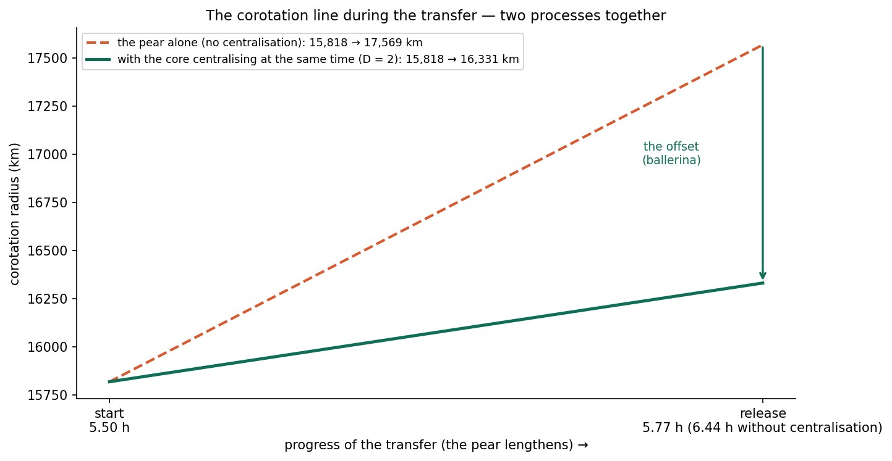
ד. הקו כשחקן פעיל
- הקו קובע את גודל האגס: חומר המגיע אל קו הקורוטציה מאבד את הנדיפים שלו, הבורחים החוצה ועוזבים את כדור הארץ. האגס ממשיך לצמוח רק כל עוד החומר נותר עליו; המסה היבשה הנותרת בקצה היא זו שהופכת לירח.
- הקו משחרר את הירח: כל עוד הקו שכן מעבר לקצה האגס, האגס הוסיף לגדול. ברגע שהקצה הגיע אל הקו — החל תהליך ההיפרדות.
- הקו מסיים את חיי האגס: המסה שישבה בקצה האגס היא שמשכה אותו כלפי חוץ. עם שחרור הירח ירדה מסה זו, ולא נותר עוד כוח שימשיך להאריך את האגס. במקביל נחשפו הפתחים שבקצה והלחץ הפנימי השתחרר, בדומה לפקק הנשלף מבקבוק. האגס חדל לגדול ונאסף בהדרגה בחזרה אל כדור הארץ בתהליך מיון איטי שנמשך עשרות עד מאות מיליוני שנים.
ה. רגע ההיפרדות
קו הקורוטציה פועל על מרכז המסה, ולכן ההיפרדות מתחילה כאשר מרכז המסה של הירח מגיע אל הקו. בתוך הקו הגוף לחוץ אל הבסיס שעליו הוא יושב; על הקו עצמו לחץ זה מתאפס; ומעבר לקו הוא הופך למשיכה כלפי חוץ.
עם זאת, הירח אינו משתחרר בבת אחת. בינו לבין קצה האגס מפרידה שכבת מגע רחבה — דיסקה בקוטר של כ-3,000 ק"מ — העשויה חומר חם וצמיג. שכבה כזו נפתחת בהדרגה, כמו שתי צלחות שביניהן שכבת דבש: בתחילה היא מתנגדת להיפרדות, ולאחר מכן נפתחת בבת אחת. הירח משתחרר כ-210 ק"מ מעבר לקו, כאשר 58% מנפחו כבר חצו אותו.
מרחק זה אינו מקרי. אילו הירח היה משתחרר בדיוק על הקו, הוא היה נכנס למסלול מעגלי לחלוטין, שממנו אין דרך להגיע לאקסצנטריות המסלולית של ימינו. שחרור מעט מעבר לקו מעניק לירח מסלול שנקודת השחרור היא הנקודה הקרובה ביותר בו לכדור הארץ (פריגיאום), עם אקסצנטריות של כ-0.037 וחצי ציר גדול של 18,163 ק"מ.
בנוסף, הירח לא יצא ממישור המשווה: מרכז דיסקת המגע ישב בקו רוחב 22.5°. בקו רוחב זה הגוף מסתובב במעגל קטן יותר סביב ציר הסיבוב, ולכן מגיע למהירות מסלולית במרחק גדול יותר ממרכז כדור הארץ: קו הקורוטציה בקו רוחב 22.5° שוכן ב-17,287 ק"מ (לעומת 16,399 ק"מ במישור המשווה). מכאן יוצא מסלול נטוי.
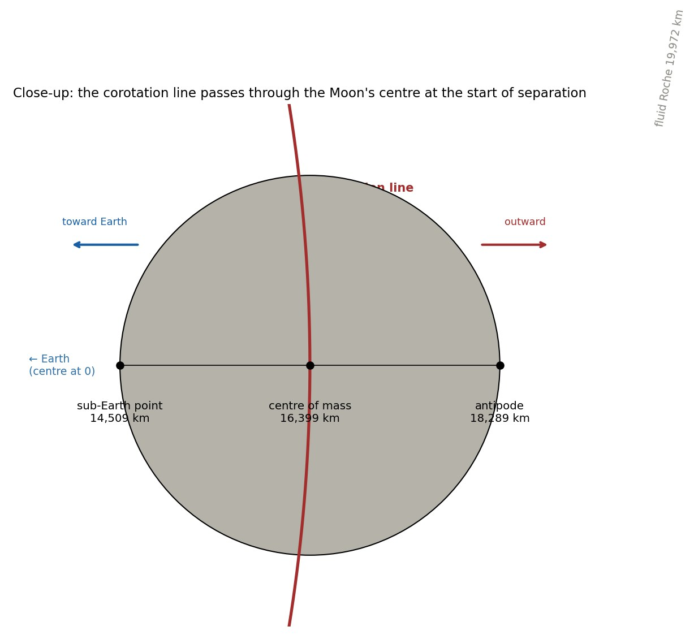
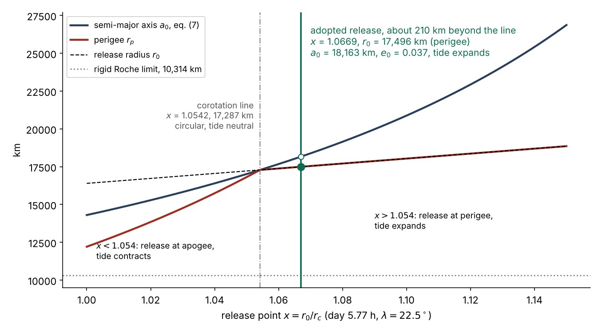
ו. אחרי השחרור: הקו קובע את כיוון התנועה
מרגע השחרור פועל קו הקורוטציה כפרשת מים גאותית. מאחר שהירח מצוי מעט מעבר לקו, בליטת הגאות שכדור הארץ מרים — שכן כדור הארץ מסתובב מהר יותר משהירח מקיף — מקדימה את הירח ודוחפת אותו קדימה והחוצה. כך מתחיל הירח להתרחק כבר מן ההקפה הראשונה.
ז. "לא היינו רחוקים מזה"
אילו קו הקורוטציה היה מרוחק מעט יותר, קצה האגס לא היה מצליח להשיג אותו. ההתייבשות, המיון הפנימי והאטת הסיבוב היו בולמים את צמיחת האגס, והירח היה שוקע בחזרה אל כדור הארץ עם מלוא מסתו. במקרה כזה היו לכדור הארץ יבשות ענק נוספות, היממה הייתה קצרה יותר, והחיים על פני כדור הארץ היו נראים אחרת לגמרי — ואולי לא היו מתפתחים כלל.
תיבות מעבדה
הכוח המחזיק שני משטחים שביניהם שכבה צמיגה דקה נתון בנוסחה:
הכוח תלוי בעובי השכבה בחזקה שלישית. כאשר עובי השכבה גדל פי שלושה (), ההתנגדות להיפרדות צונחת פי 27. תזוזה של כ- מעבר לקו מספיקה אפוא לפתיחת המגע, ושכבה בעובי של כ-105 ק"מ מניבה את מרחק השחרור של 210 ק"מ.
בקו רוחב , הגוף מסתובב במרחק מציר הסיבוב. מהירותו המשיקית, , משתווה למהירות המסלולית במרחק:
בקו רוחב 22.5° מתקבל מרחק של 17,287 ק"מ. חשוב לשים לב: בנקודה זו המהירויות שוות, אך זמן ההקפה של המסלול הנטוי (6.25 שעות) ארוך מאורך היממה (5.77 שעות), משום שהמסלול החופשי עובר במעגל גדול סביב מרכז כדור הארץ.
משני צדי הקו: פובוס ודיימוס
כיום שוכן קו הקורוטציה של מאדים במרחק 20,428 ק"מ ממרכזו. שני ירחיו של מאדים ממוקמים משני עבריו של קו זה:
- פובוס מקיף את מאדים במרחק 9,376 ק"מ, מתחת לקו. מאחר שהוא משלים הקפה מהר יותר מסיבובו העצמי של מאדים, כוחות הגאות בולמים אותו והוא יורד ומתקרב אל כוכב הלכת בקצב של כ-1.8 ס"מ בשנה.
- דיימוס מקיף במרחק 23,463 ק"מ, מעל הקו, ולכן כוחות הגאות דוחפים אותו והוא מתרחק לאטו.
אותו קו עצמו קובע אפוא את גורלם ההפוך של השניים. לפי מודל LEF, שני הירחים נולדו מתוך מאדים הצעיר כאשר אורך היממה שלו עמד על 7–9 שעות וקו הקורוטציה שכן קרוב הרבה יותר לפני השטח — כ-9,100 ק"מ ביממה של 7.3 שעות. דיימוס נפלט ראשון מתוך הר הגעש פבוניס (Pavonis Mons) ונזרק אל מעבר לקו הקורוטציה; פובוס נפלט אחריו.
סביב מאדים הצעיר השתרעה באותה עת טבעת חומר. שפתה הפנימית, שהייתה גזית, החזיקה את פובוס על קו הקורוטציה כמו רצועה כנגד כוחות הגאות, והובילה אותו כלפי חוץ יחד עם הקו הנודד בעוד מאדים מאט את סיבובו. כאשר הטבעת התייבשה ונעלמה — סביב מרחק 19,000 ק"מ וביממה של כ-22 שעות — המשיך קו הקורוטציה לנוע החוצה, ואילו פובוס נותר מתחתיו. מאז אותו רגע הוא יורד בהדרגה לעבר מאדים.
מאדים עצמו האט את סיבובו משום שמים וגזים ברחו דרך קו הקורוטציה ונשאו עמם תנע זוויתי — שיעור המוערך במודל ב-6%–11% ממסתו של כוכב הלכת.
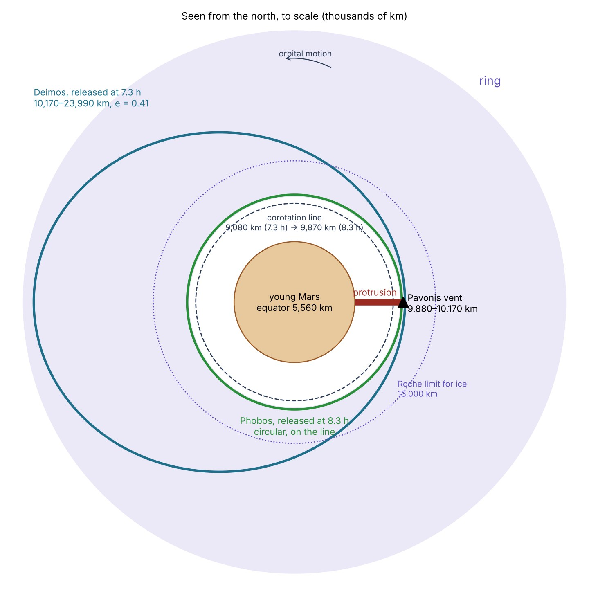
קו הקורוטציה בכל מערכת השמש
א. סרגל הלידה
כאשר מודדים את מיקום קו הקורוטציה ביחידות של רדיוס כוכב הלכת, , מסת הכוכב מצטמצמת מן המשוואה ונותר רק היחס שבין קצב הסיבוב לבין הצפיפות הממוצעת. בדרך זו ניתן להשוות כל גוף במערכת השמש לכל גוף אחר על סרגל אחיד אחד:
- אגס או בליטה: הקו שוכן בטווח של 1.75 עד 2.3 רדיוסים. כדור הארץ ברגע לידת הירח עמד על 2.29 (ביחס לרדיוסו באותה עת, 7,157 ק"מ), ומאדים ברגע לידת ירחיו עמד על 1.74–2.06.
- הר געש ללא בליטה: הקו שוכן בטווח של 1.1 עד 1.5 רדיוסים.
- פיצול מלא: הקו שוכן בערך ברדיוס אחד; סביב ערך של 1.53 הגוף כבר מקבל צורת בוטן מוארכת — וכך התפצלו פלוטו וכארון.
תהליך המיון הפנימי בתוך כוכב הלכת מקרב את קו הקורוטציה אל פני השטח: שקיעת הליבה הכבדה למרכז מאיצה את הסיבוב, ובמקביל המים והנדיפים מנפחים את השכבה החיצונית כלפי מעלה — כך שהקו מתקרב אל פני השטח מבפנים ומבחוץ בעת ובעונה אחת.
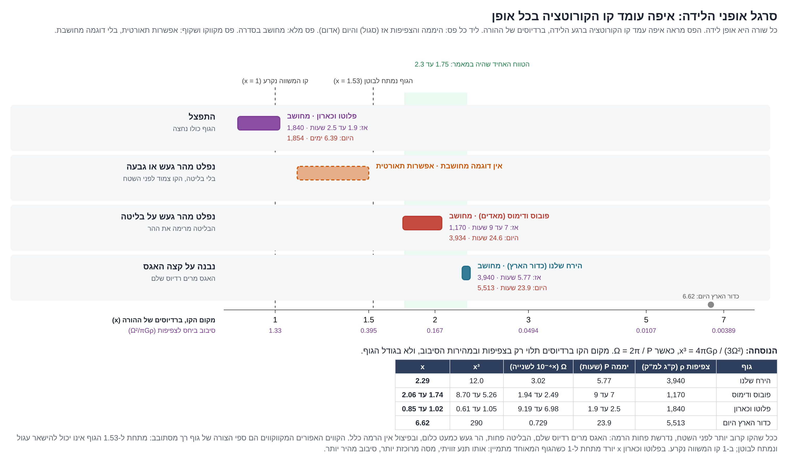
ב. הקו שזז לאורך ההיסטוריה
מים וגזים הבורחים דרך קו הקורוטציה נושאים עמם תנע זוויתי. כתוצאה מכך כוכב הלכת מאט, והקו נדחק כלפי חוץ — במהירות בתחילת הדרך ולאט יותר בהמשכה. ירחים שנותרו מתחת לקו נופלים פנימה, וירחים שמעליו מתרחקים החוצה.
בכוכבי הלכת שבשני צדי מערכת השמש — כוכב חמה (מרקורי), נוגה, כדור הארץ, מאדים, אורנוס ונפטון — נדד קו הקורוטציה הרחק החוצה (ובכוכב חמה ובנוגה הוא התרחק עד שיצא לחלוטין מתחום השליטה הכבידתי של הכוכב). לעומת זאת, במרכז מערכת השמש, בענקי הגז צדק ושבתאי, מעטפת הגז העבה כלאה את המים בפנים ומנעה את בריחתם, ולכן קו הקורוטציה כמעט שלא זז ממקומו.
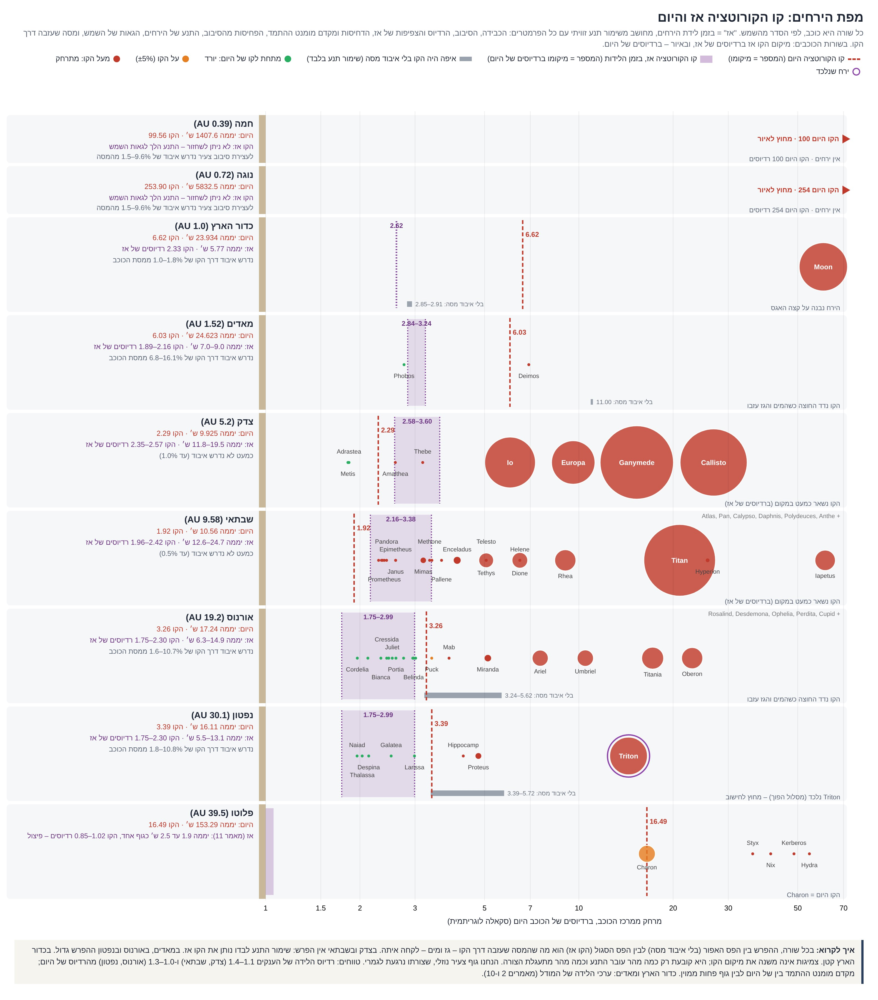
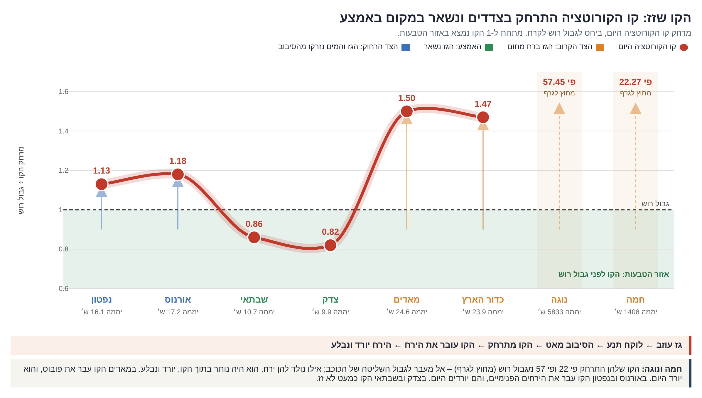
ג. הטבעות
טבעת מסיבית הניזונה מחומרו של כוכב הלכת עצמו מחייבת התקיימות של שני תנאים בו-זמנית: קו הקורוטציה חייב להימצא בתוך גבול רוש, וחומר חייב לדלוף מפני השטח כלפי מעלה. התנאי הראשון שקול לכלל פשוט ואוניברסלי: אורך יממה קצר מ-13.4 שעות — ללא כל תלות במסת הכוכב, ברדיוסו או בעוצמת הכבידה שלו. שבתאי של ימינו ומאדים הצעיר עמדו בשני התנאים הללו. טבעות השוכנות מחוץ לקו הקורוטציה מקורן בירחים, ואילו טבעות המצויות בתוך הקו יכולות להיווצר הן מחומר של כוכב הלכת עצמו והן מחומר של ירחים.
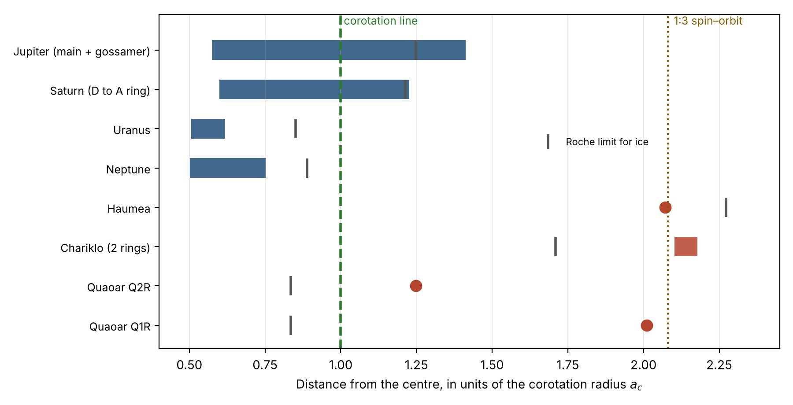
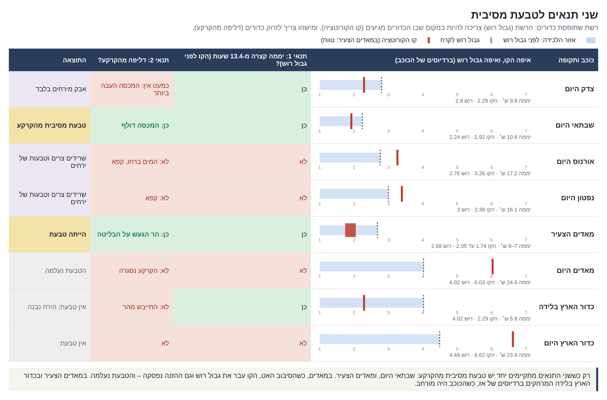
נוסחאות המפתח
1. מיקום הקו: מהירות הסיבוב שווה למהירות המסלולית.
ביממה של 5.5 שעות: 15,818 ק"מ ו-5,020 מ'/ש'. ביממה של 5.77 שעות: 16,399 ק"מ. היום: 42,164 ק"מ.
2. הקו בקו רוחב:
3. הגבעה האפקטיבית שהחומר צריך לטפס עליה בדרך אל הקו:
4. הקו ביחידות רדיוס (סרגל הלידה) — המסה מתבטלת:
5. מיון מקרב את הקו: בשימור תנע זוויתי, , ולכן
הליבה השוקעת מקטינה את , ומכיוון שהוא בריבוע, השפעתה גוברת על התנפחות הרדיוס.
6. הקו וגבול רוש — הצפיפות מתבטלת:
7. פרשת המים: מתחת לקו והגוף מתקרב; מעל הקו והגוף מתרחק.
החתימה במציאות: היכן רואים את הקו היום?
- הלוויינים הגיאוסטציונריים: שוכנים בדיוק על קו הקורוטציה של כדור הארץ כיום (42,164 ק"מ) ומשמשים את מערכות התקשורת והתצפית שלנו מדי יום.
- פובוס ודיימוס: שני ירחים הממוקמים משני עברי קו הקורוטציה של מאדים — האחד יורד פנימה והשני מתרחק החוצה.
- הירח שמתרחק: מתרחק בקצב של 3.8 ס"מ בשנה, מעבר לקו הקורוטציה, כהמשך ישיר לתנועה שהחלה כבר בהקפה הראשונה שלו.
- פלוטו וכארון: מצב הסיום של האבולוציה הגאותית, שבו קו הקורוטציה והמסלול התלכדו לחלוטין.
- החישורים של שבתאי: אבק טעון המסודר רדיאלית עד לקו הקורוטציה של שבתאי בהשפעת השדה המגנטי המסתובב יחד עם כוכב הלכת.
- הטבעות המסיביות: מצויות אך ורק סביב כוכבי לכת שאורך היממה שלהם קצר מ-13.4 שעות.
- הקו שזז לאורך ההיסטוריה: בכוכבי הלכת שבשני צדי מערכת השמש נדד הקו הרחק מגבול רוש, ואילו בענקי הגז שבמרכז המערכת (צדק ושבתאי) הוא נותר כמעט במקומו.
ריבוע המעבדה: טבלת סיכום
| מדד | ערך | משמעות |
|---|---|---|
| הקו ביממה של 5.5 ש' | 15,818 ק"מ (15,883 עם המסה המלאה) | תחילת ההזנה |
| מהירות בקו | 5,020 מ'/ש' | מהירות הסיבוב ומהירות המסלול שוות |
| הפער בפני השטח | 5,568 מ'/ש' | פער המהירות שהקו חוסך |
| הקו ברגע השחרור (5.77 ש') | 16,399 ק"מ במשווה · 17,287 ק"מ ב-22.5° | ההחלטה של המאמרים: קו רוחב 22.5° |
| הקו אילו האגס פעל לבדו | 17,569 ק"מ (6.44 ש') | הליבה השוקעת החזירה 0.67 ש' |
| מרחק השחרור מעבר לקו | כ-210 ק"מ · 58% מהנפח מעבר לקו | שכבת סטפן נפתחת |
| המסלול הראשון | a = 18,163 km · e ≈ 0.037 | שחרור בפריגיאום |
| תנע זוויתי | פי 1.007 מהיום | במקום פי 2.7–4 בביקוע הקלאסי |
| הקו של מאדים היום | 20,428 ק"מ | פובוס בפנים, דיימוס בחוץ |
| סף הטבעת | יממה קצרה מ-13.4 ש' | הקו שוכן בתוך גבול רוש |
| כדור הארץ ברגע הלידה | x = 2.29 | בתוך טווח האגס (1.75–2.3) |
קישורים ודלת להמשך
- מושגי יסוד קשורים: האגס · הבלרינה (התארגנות הליבה) · שכבת סטפן · גבול רוש · הנדיפים כמנוע · תקציב התנע הזוויתי.
- תעלומות שהקו פותר: מאיפה באה המהירות המסלולית של הירח · מדוע תקציב התנע הזוויתי מספיק · מדוע למאדים שני ירחים קטנים ולכדור הארץ ירח אחד גדול · מדוע פובוס יורד ודיימוס מתרחק · מדוע לכוכב חמה ולנוגה אין ירחים · מדוע הטבעות הגדולות מצויות בצדק ובשבתאי.
- מבחנים עתידיים: משימת MMX (פובוס) · אינטגרציה גאותית מן ההקפה הראשונה · ההיסטוריה של קצב הסיבוב של מאדים.
- דלת להמשך: מכאן אל המושג הבא בארגז הכלים — האגס.